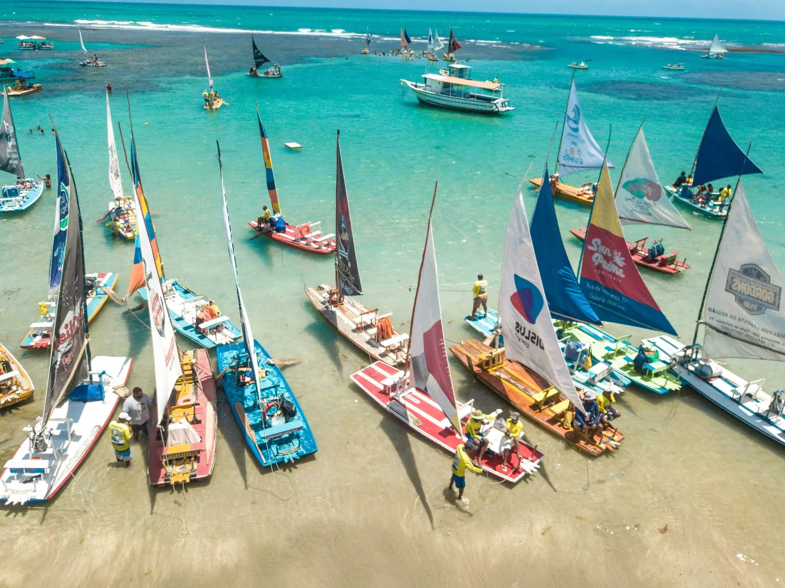

 |
Destino: Porto de Galinhas Estado: Pernambuco (PE) O passeio de jangada leva os visitantes até as piscinas naturais formadas pelos recifes de corais na maré baixa, um dos passeios mais conhecidos de Porto de Galinhas, com águas claras e mornas. Como funciona o passeio: O passeio começa na praia, onde os visitantes embarcam na jangada e são levados até as piscinas naturais formadas pelos recifes. Lá, é possível nadar, observar peixes e aproveitar as águas rasas e calmas. |
Cronograma do passeio
|
Recomendações para o visitante
|
Observação: os horários são apenas um exemplo de cronograma e podem variar | |
| Horário | Duração | Atividade |
|---|---|---|
| Maré baixa | Aproximadamente 30 minutos | Trajeto de jangada até as piscinas |
| Durante o passeio | 1 hora | Banho e observação nas piscinas naturais |